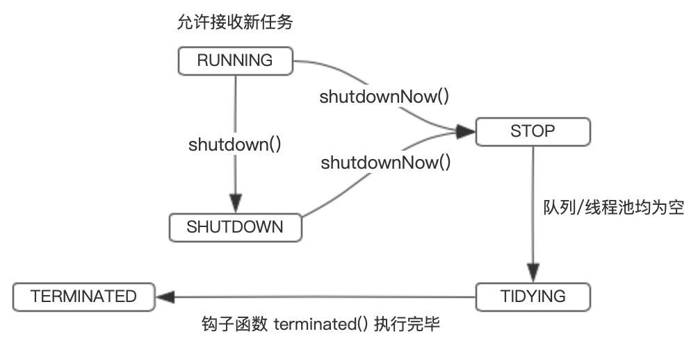
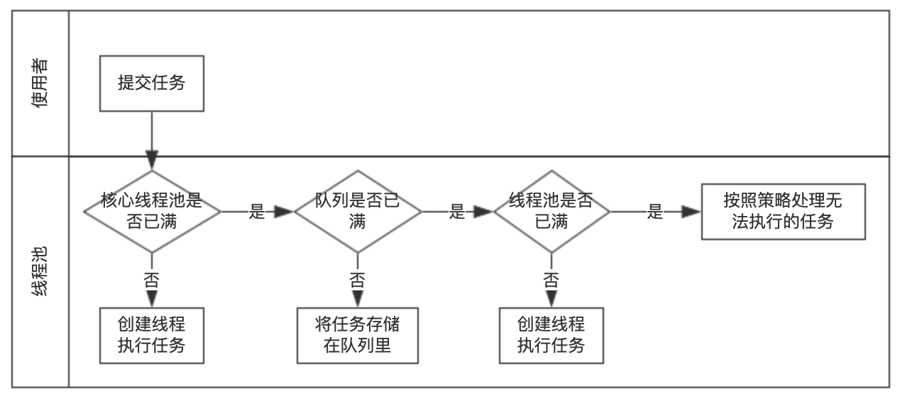
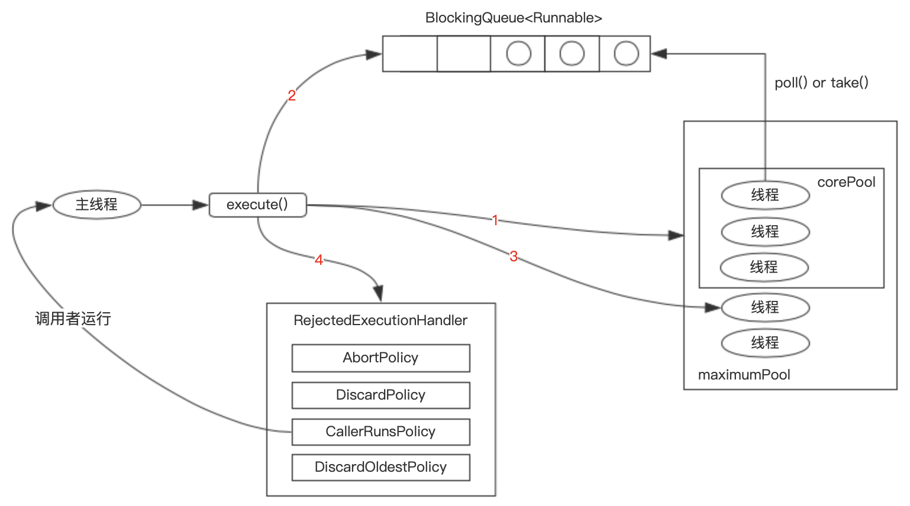

1 概述 Java 中的线程池是运用场景最多的并发框架，几乎所有需要异步或并发执行任务的程序都可以使用线程池。在开发过程中，合理地使用线程池能够带来 3 个好处。
降低资源消耗。通过重复利用已创建的线程降低线程创建和销毁造成的消耗。
提高响应速度。当任务到达时，任务可以不需要等到线程创建就能立即执行。
提高线程的可管理性。线程是稀缺资源，如果无限制地创建，不仅会消耗系统资源，还会降低系统的稳定性，使用线程池可以进行统一分配、调优和监控。但是，要做到合理利用线程池，必须对其实现原理了如指掌。
2 生命周期 在 ThreadPoolExecutor 线程池的设计中，把整个任务执行框架线程池划分为 5 个生命周期。参见源码 ThreadPoolExecutor 中的定义：
java.util.concurrent.ThreadPoolExecutor 1 2 3 4 5 6 7 8 9 10 11 12 13 14 15 16 17 18 19 20 21 22 private final AtomicInteger ctl = new AtomicInteger(ctlOf(RUNNING, 0 ));private static final int COUNT_BITS = Integer.SIZE - 3 ;private static final int CAPACITY = (1 << COUNT_BITS) - 1 ;private static final int RUNNING = -1 << COUNT_BITS;private static final int SHUTDOWN = 0 << COUNT_BITS;private static final int STOP = 1 << COUNT_BITS;private static final int TIDYING = 2 << COUNT_BITS;private static final int TERMINATED = 3 << COUNT_BITS;private static int runStateOf (int c) return c & ~CAPACITY; }private static int workerCountOf (int c) return c & CAPACITY; }private static int ctlOf (int rs, int wc) return rs | wc; }private static boolean isRunning (int c) return c < SHUTDOWN; }
变量 ctl 用于记录线程池中的任务数量和线程状态两个信息，其中高 3 位表示线程池状态，低 29 位表示线程池中的任务数量 。
RUNNING ：线程池能够接受新任务，以及对新添加的任务进行处理。SHUTDOWN ：线程池不可以接受新任务，但是可以对已添加的任务进行处理。STOP ：线程池不接收新任务，不处理已添加的任务，并且会中断正在处理的任务。TIDYING ：当所有的任务已终止，ctl 记录的任务数量为 0 时，线程池会变为 TIDYING 状态。当线程池变为 TIDYING 状态时，会执行 terminated 钩子方法。terminated 钩子方法在 ThreadPoolExecutor 类中是空的，若用户想在线程池变为 TIDYING 时，进行相应的处理；可以通过重载 terminated 钩子方法来实现。TERMINATED ：线程池彻底终止的状态。
各个生命周期转化图：

从图中可以看到，整个生命周期的变化是不可逆 的。
状态
高位置枚举
正负性
RUNNING
111
负数（-536870912）
SHUTDOWN
000
0
STOP
001
正数（536870912）
TIDYING
010
正数（1073741824）
TERMINATED
011
正数（1610612736）
因此在状态值的排布上可以知道：TERMINATED > TIDYING > STOP > SHUTDOWN > RUNNING。
3 实现原理 线程池的主要处理流程：

ThreadPoolExecutor 执行示意图：

ThreadPoolExecutor 执行 execute 方法执行过程：
① 如果当前运行的线程少于 corePoolSize，则创建新线程来执行任务（注意，执行这一步骤需要获取全局锁）。
ThreadPoolExecutor 采取上述步骤的总体设计思路，是为了在执行 execute() 方法时，尽可能地避免获取全局锁（那将会是一个严重的可伸缩瓶颈）。在 ThreadPoolExecutor 完成预热之后（当前运行的线程数大于等于 corePoolSize），几乎所有的 execute() 方法调用都是执行步骤 2，而步骤 2 不需要获取全局锁 。
4 线程池的使用 4.1 创建线程池 我们可以通过 ThreadPoolExecutor 来创建一个线程池。
1 2 3 4 5 6 7 8 9 10 11 12 13 14 15 16 17 18 public ThreadPoolExecutor (int corePoolSize, int maximumPoolSize, long keepAliveTime, TimeUnit unit, BlockingQueue<Runnable> workQueue, ThreadFactory threadFactory, RejectedExecutionHandler handler) if (corePoolSize < 0 || maximumPoolSize <= 0 || maximumPoolSize < corePoolSize || keepAliveTime < 0 ) throw new IllegalArgumentException(); if (workQueue == null || threadFactory == null || handler == null ) throw new NullPointerException(); this .corePoolSize = corePoolSize; this .maximumPoolSize = maximumPoolSize; this .workQueue = workQueue; this .keepAliveTime = unit.toNanos(keepAliveTime); this .threadFactory = threadFactory; this .handler = handler; }
接下来看下创建一个线程池时需要填入几个重要参数的含义及其作用。
① 线程池大小 当提交一个任务到线程池时，线程池会创建一个线程来执行任务，即使其他空闲的核心线程能够执行新任务也会创建线程，等到需要执行的任务数大于核心线程池大小（corePoolSize）时就不再创建。如果调用了线程池的 prestartAllCoreThreads 方法，线程池会提前创建并启动所有核心线程 ，类似的 prestartCoreThread 方法可以单独启动一个核心线程，如果所有核心线程都已启动，则此方法将返回 false。
线程池允许创建的最大线程数（maximumPoolSize）。如果队列满了，并且已创建的线程数小于最大线程数，则线程池会再创建新的线程执行任务。值得注意的是， 如果使用了无界的任务队列最大线程数（maximumPoolSize）就不再发挥作用 。
② 存活时间 空闲线程的存活时间，如果某线程的空闲时间超过这个值都没有任务给它做，那么可以被关闭了。注意这个值并不会对所有线程起作用 ，如果线程池中的线程数少于等于核心线程数，那么这些线程不会因为空闲太长时间而被关闭，当然，也可以通过调用 allowCoreThreadTimeOut(true) 使核心线程数内的线程也可以被回收。
③ 阻塞队列 用于保存等待执行的任务的阻塞队列。可以选择的阻塞队列参见：Java-集合-03-Queue 。
④ 线程工厂 用于设置创建线程的工厂，可以通过线程工厂给每个创建出来的线程设置更有意义的名字。使用开源框架 guava 提供的 ThreadFactoryBuilder 可以快速给线程池里的线程设置有意义的名字，代码如下。
1 new ThreadFactoryBuilder().setNameFormat("XX-task-%d" ).build();
⑤ 拒绝策略 当队列和线程池都满了，说明线程池处于饱和状态，那么必须采取一种策略处理提交的新任务。这个策略默认情况下是 AbortPolicy，表示无法处理新任务时抛出异常。在 JDK 1.5 中 Java 线程池框架提供了以下 4 种策略，以及扩展的第三方自定义拒绝策略。
1 2 3 public interface RejectedExecutionHandler void rejectedExecution (Runnable r, ThreadPoolExecutor executor) }
1）AbortPolicy（中止策略）
1 2 3 4 5 6 7 8 9 10 11 12 13 14 public static class AbortPolicy implements RejectedExecutionHandler public AbortPolicy () public void rejectedExecution (Runnable r, ThreadPoolExecutor e) throw new RejectedExecutionException("Task " + r.toString() + " rejected from " + e.toString()); } }
功能：当触发拒绝策略时，直接抛出拒绝执行的异常，中止策略的意思也就是中断当前执行流程。
使用场景：没有需要注意的特殊场景，但是一点，要正确处理抛出的异常。ThreadPoolExecutor 中默认的策略就是 AbortPolicy，ExecutorService 接口的系列 ThreadPoolExecutor 因为都没有显示的设置拒绝策略，所以默认的都是 AbortPolicy。但是请注意，ExecutorService 中的线程池中的队列都是无界的，也就是说把内存撑爆了都不会触发拒绝策略。当自己自定义线程池实例时，使用这个策略一定要处理好触发策略时抛的异常，因为他会中断当前的执行流程。
2）CallerRunsPolicy（调用者运行策略）
1 2 3 4 5 6 7 8 9 10 11 12 13 14 15 public static class CallerRunsPolicy implements RejectedExecutionHandler public CallerRunsPolicy () public void rejectedExecution (Runnable r, ThreadPoolExecutor e) if (!e.isShutdown()) { r.run(); } } }
功能：当触发拒绝策略时，只要线程池没有关闭，就由提交任务的当前线程处理。
使用场景：一般在不允许失败的、对性能要求不高、并发量较小的场景下使用，因为线程池一般情况下不会关闭，也就是提交的任务一定会被运行，但是由于是调用者线程自己执行的，当多次提交任务时，就会阻塞后续任务执行，性能和效率自然就慢了。
3）DiscardOldestPolicy（弃老策略）
1 2 3 4 5 6 7 8 9 10 11 12 13 14 15 16 17 public static class DiscardOldestPolicy implements RejectedExecutionHandler public DiscardOldestPolicy () public void rejectedExecution (Runnable r, ThreadPoolExecutor e) if (!e.isShutdown()) { e.getQueue().poll(); e.execute(r); } } }
功能：如果线程池未关闭，丢弃阻塞队列中末尾的任务，然后将被拒绝的任务添加到末尾。
使用场景：这个策略会丢弃任务，但是特点是丢弃的是最老的未执行的任务，而且是待执行优先级较高的任务。基于这个特性，可以想到的使用场景就是，发布消息和修改消息，当消息发布出去后，还未执行，此时更新的消息又来了，这个时候未执行的消息的版本比现在提交的消息版本要低就可以被丢弃了。因为队列中还有可能存在消息版本更低的消息会排队执行，所以在真正处理消息的时候一定要做好消息的版本比较。
4）DiscardPolicy（丢弃策略）
1 2 3 4 5 6 7 8 9 10 11 12 public static class DiscardPolicy implements RejectedExecutionHandler public DiscardPolicy () public void rejectedExecution (Runnable r, ThreadPoolExecutor e) } }
功能：直接静悄悄的丢弃这个任务，不触发任何动作。
使用场景：如果你提交的任务无关紧要，你就可以使用它 。因为它就是个空实现，会悄无声息的吞噬你的的任务。所以这个策略基本上不用了。
5）Dubbo 拒绝策略：AbortPolicyWithReport
1 2 3 4 5 6 7 8 9 10 11 12 13 14 15 16 17 18 19 20 21 22 23 24 25 26 27 28 29 public class AbortPolicyWithReport extends ThreadPoolExecutor .AbortPolicy protected static final Logger logger = LoggerFactory.getLogger(AbortPolicyWithReport.class); private final String threadName; private final URL url; private static volatile long lastPrintTime = 0 ; private static Semaphore guard = new Semaphore(1 ); public AbortPolicyWithReport (String threadName, URL url) this .threadName = threadName; this .url = url; } @Override public void rejectedExecution (Runnable r, ThreadPoolExecutor e) String msg = String.format("Thread pool is EXHAUSTED!" + " Thread Name: %s, Pool Size: %d (active: %d, core: %d, max: %d, largest: %d), Task: %d (completed: %d)," + " Executor status:(isShutdown:%s, isTerminated:%s, isTerminating:%s), in %s://%s:%d!" , threadName, e.getPoolSize(), e.getActiveCount(), e.getCorePoolSize(), e.getMaximumPoolSize(), e.getLargestPoolSize(), e.getTaskCount(), e.getCompletedTaskCount(), e.isShutdown(), e.isTerminated(), e.isTerminating(), url.getProtocol(), url.getIp(), url.getPort()); logger.warn(msg); dumpJStack(); throw new RejectedExecutionException(msg); } private void dumpJStack () } }
可以看到，当 Dubbo 的工作线程触发了线程拒绝后，主要做了三个事情，原则就是尽量让使用者清楚触发线程拒绝策略的真实原因。
第一，输出了一条警告级别的日志，日志内容为线程池的详细设置参数，以及线程池当前的状态，还有当前拒绝任务的一些详细信息。可以说，这条日志，使用 Dubbo 的有过生产运维经验的或多或少是见过的，这个日志简直就是日志打印的典范，其他的日志打印的典范还有 Spring。得益于这么详细的日志，可以很容易定位到问题所在。《Dubbo 线程池耗尽事件-“CyclicBarrier 惹的祸”》 。
6）Netty 拒绝策略：NewThreadRunsPolicy
1 2 3 4 5 6 7 8 9 10 11 12 13 private static final class NewThreadRunsPolicy implements RejectedExecutionHandler NewThreadRunsPolicy() { super (); } public void rejectedExecution (Runnable r, ThreadPoolExecutor executor) try { final Thread t = new Thread(r, "Temporary task executor" ); t.start(); } catch (Throwable e) { throw new RejectedExecutionException("Failed to start a new thread" , e); } } }
Netty 中的实现很像 JDK 中的 CallerRunsPolicy，舍不得丢弃任务。不同的是，CallerRunsPolicy 是直接在调用者线程执行的任务。而 Netty 是新建了一个线程来处理的。所以，Netty 的实现就可以扩展到支持高效率高性能的场景了。但是也要注意一点，Netty 的实现里，在创建线程时未做任何的判断约束，也就是说只要系统还有资源就会创建新的线程来处理，直到创建不了新的线程，才会抛创建线程失败的异常。
当然，也可以根据应用场景需要来实现 RejectedExecutionHandler 接口自定义策略。
4.2 提交任务 可以使用两个方法向线程池提交任务，分别为 execute 和 submit 方法。其中 submit 方法为抽象类 AbstractExecutorService 中的方法：
1 2 3 4 5 6 public <T> Future<T> submit (Callable<T> task) { if (task == null ) throw new NullPointerException(); RunnableFuture<T> ftask = newTaskFor(task); execute(ftask); return ftask; }
execute() 方法用于提交不需要返回值的任务，所以无法判断任务是否被线程池执行成功。
1 2 3 executor.execute(() -> { });
submit 方法用于提交需要返回值的任务。线程池会返回一个 future 类型的对象，通过这个 future 对象可以判断任务是否执行成功，并且可以通过 future 的 get 方法来获取返回值，get() 方法会阻塞当前线程直到任务完成，而使用 get(long timeout，TimeUnit unit) 方法则会阻塞当前线程一段时间后立即返回，这时候有可能任务没有执行完。
1 2 3 4 5 6 7 8 9 10 11 Future<Object> future = executor.submit(harReturnValuetask); try { Object s = future.get(); } catch (InterruptedException e) { } catch (ExecutionException e) { } finally { executor.shutdown(); }
4.3 关闭线程池 可以通过调用线程池的 shutdown 或 shutdownNow 方法来关闭线程池。它们的原理是遍历线程池中的工作线程，然后逐个调用线程的 interrupt 方法来中断线程，所以无法响应中断的任务可能永远无法终止 。
区别 ：shutdownNow 首先将线程池的状态设置成 STOP，然后尝试停止所有的正在执行或暂停任务的线程，并返回等待执行任务的列表，而 shutdown 只是将线程池的状态设置成 SHUTDOWN 状态，然后中断所有没有正在执行任务的线程。
只要调用了这两个关闭方法中的任意一个，isShutdown 方法就会返回 true。当所有的任务都已关闭后，才表示线程池关闭成功，这时调用 isTerminaed 方法会返回 true。至于应该调用哪一种方法来关闭线程池，应该由提交到线程池的任务特性决定，通常调用 shutdown 方法来关闭线程池，如果任务不一定要执行完，则可以调用 shutdownNow 方法。
4.4 合理配置线程池 要想合理地配置线程池，就必须首先分析任务特性，可以从以下几个角度来分析。
任务的性质：CPU 密集型任务、IO 密集型任务和混合型任务。
任务的优先级：高、中和低。
任务的执行时间：长、中和短。
任务的依赖性：是否依赖其他系统资源，如数据库连接。
性质不同的任务可以用不同规模的线程池分开处理。CPU 密集型任务应配置尽可能小的线程，如配置 Ncpu+1 个线程的线程池。由于 IO 密集型任务线程并不是一直在执行任务，则应配置尽可能多的线程，如 2×Ncpu。混合型的任务，如果可以拆分，将其拆分成一个 CPU 密集型任务和一个 IO 密集型任务，只要这两个任务执行的时间相差不是太大，那么分解后执行的吞吐量将高于串行执行的吞吐量。如果这两个任务执行时间相差太大，则没必要进行分解。可以通过 Runtime.getRuntime().availableProcessors() 方法获得当前设备的 CPU 个数。
优先级不同的任务可以使用优先级队列 PriorityBlockingQueue 来处理。它可以让优先级高的任务先执行。注意：如果一直有优先级高的任务提交到队列里，那么优先级低的任务可能永远不能执行 。
执行时间不同的任务可以交给不同规模的线程池来处理，或者可以使用优先级队列，让执行时间短的任务先执行。
依赖数据库连接池的任务，因为线程提交 SQL 后需要等待数据库返回结果，等待的时间越长，则 CPU 空闲时间就越长，那么线程数应该设置得越大，这样才能更好地利用 CPU。
建议使用有界队列。有界队列能增加系统的稳定性和预警能力。
4.5 钩子方法 ThreadPoolExecutor 中主要提供以下三个钩子方法，这三个方法都是 protected 的空方法以便扩展。
1 2 3 protected void beforeExecute (Thread t, Runnable r) protected void afterExecute (Runnable r, Throwable t) protected void terminated ()
在执行任务的线程中将调用 beforeExecute 和 afterExecute 方法，在这些方法中还可以添加日志、计时、监视或者统计信息收集的功能。
无论任务是从 run 方法中正常返回，还是抛出一个异常而返回，afterExecute 都会被调用。
如果任务在完成后带有一个 Error，那么就不会调用 afterExecute。
如果 beforeExecute 抛出一个 RuntimeException，那么任务将不被执行，并且 afterExecute 也不会被调用。
在线程池完成关闭时调用 terminated，也就是在所有任务都已经完成并且所有工作者线程也已经关闭后，terminated 可以用来释放 Executor 在其生命周期里分配的各种资源，此外还可以执行发送通知、记录日志等操作。关于钩子方法的应用实战，参见：Java 多线程之扩展 ThreadPoolExecutor 。
借助钩子方法下面的 PausableThreadPoolExecutor 是官方文档中提供的一个简单的支持可暂停/恢复的线程池。
1 2 3 4 5 6 7 8 9 10 11 12 13 14 15 16 17 18 19 20 21 22 23 24 25 26 27 28 29 30 31 32 33 34 35 36 37 38 39 40 class PausableThreadPoolExecutor extends ThreadPoolExecutor private boolean isPaused; private ReentrantLock pauseLock = new ReentrantLock(); private Condition unpaused = pauseLock.newCondition(); public PausableThreadPoolExecutor (...) super (...); } protected void beforeExecute (Thread t, Runnable r) super .beforeExecute(t, r); pauseLock.lock(); try { while (isPaused) unpaused.await(); } catch (InterruptedException ie) { t.interrupt(); } finally { pauseLock.unlock(); } } public void pause () pauseLock.lock(); try { isPaused = true ; } finally { pauseLock.unlock(); } } public void resume () pauseLock.lock(); try { isPaused = false ; unpaused.signalAll(); } finally { pauseLock.unlock(); } } }
4.6 线程池的监控 如果在系统中大量使用线程池，则有必要对线程池进行监控，方便在出现问题时，可以根据线程池的使用状况快速定位问题。可以通过线程池提供的参数进行监控，在监控线程池的时候可以使用以下属性或方法。
taskCount 属性：线程池需要执行的任务数量。
completedTaskCount 属性：线程池在运行过程中已完成的任务数量，小于或等于 taskCount。
largestPoolSize 属性：线程池里曾经创建过的最大线程数量。通过这个数据可以知道线程池是否曾经满过。如该数值等于线程池的最大大小，则表示线程池曾经满过。
getPoolSize 方法：线程池的线程数量。如果线程池不销毁的话，线程池里的线程不会自动销毁，所以这个大小只增不减。
getActiveCount 方法：获取活动的线程数。
通过扩展线程池进行监控。可以通过继承线程池来自定义线程池，重写线程池的 beforeExecute、afterExecute 和 terminated 方法，也可以在任务执行前、执行后和线程池关闭前执行一些代码来进行监控。例如，监控任务的平均执行时间、最大执行时间和最小执行时间等。
扩展 ThreadPoolExecutor 实现线程池监控
4.7 使用原则
谈谈线程池使用原则
5 源码分析 5.1 任务提交方法 1 2 3 4 5 6 7 8 9 10 11 12 13 14 15 16 17 18 19 20 21 22 23 24 25 26 27 28 29 30 31 public void execute (Runnable command) if (command == null ) throw new NullPointerException(); int c = ctl.get(); if (workerCountOf(c) < corePoolSize) { if (addWorker(command, true )) return ; c = ctl.get(); } if (isRunning(c) && workQueue.offer(command)) { int recheck = ctl.get(); if (!isRunning(recheck) && remove(command)) reject(command); else if (workerCountOf(recheck) == 0 ) addWorker(null , false ); } else if (!addWorker(command, false )) reject(command); }
5.2 添加任务核心方法 1 2 3 4 5 6 7 8 9 10 11 12 13 14 15 16 17 18 19 20 21 22 23 24 25 26 27 28 29 30 31 32 33 34 35 36 37 38 39 40 41 42 43 44 45 46 47 48 49 50 51 52 53 54 55 56 57 58 59 60 61 62 63 64 65 66 67 68 69 70 71 72 73 74 75 76 77 78 79 80 81 82 83 84 85 86 87 88 89 90 private boolean addWorker (Runnable firstTask, boolean core) retry: for (;;) { int c = ctl.get(); int rs = runStateOf(c); if (rs >= SHUTDOWN && !(rs == SHUTDOWN && firstTask == null && !workQueue.isEmpty())) return false ; for (;;) { int wc = workerCountOf(c); if (wc >= CAPACITY || wc >= (core ? corePoolSize : maximumPoolSize)) return false ; if (compareAndIncrementWorkerCount(c)) break retry; c = ctl.get(); if (runStateOf(c) != rs) continue retry; } } boolean workerStarted = false ; boolean workerAdded = false ; Worker w = null ; try { final ReentrantLock mainLock = this .mainLock; w = new Worker(firstTask); final Thread t = w.thread; if (t != null ) { mainLock.lock(); try { int c = ctl.get(); int rs = runStateOf(c); if (rs < SHUTDOWN || (rs == SHUTDOWN && firstTask == null )) { if (t.isAlive()) throw new IllegalThreadStateException(); workers.add(w); int s = workers.size(); if (s > largestPoolSize) largestPoolSize = s; workerAdded = true ; } } finally { mainLock.unlock(); } if (workerAdded) { t.start(); workerStarted = true ; } } } finally { if (!workerStarted) addWorkerFailed(w); } return workerStarted; }
1 2 3 4 5 6 7 8 9 10 11 12 private void addWorkerFailed (Worker w) final ReentrantLock mainLock = this .mainLock; mainLock.lock(); try { if (w != null ) workers.remove(w); decrementWorkerCount(); tryTerminate(); } finally { mainLock.unlock(); } }
1 2 3 4 5 6 7 8 9 10 11 12 13 14 15 16 17 18 19 20 21 22 23 24 25 26 27 28 29 30 31 32 33 34 35 36 final void tryTerminate () for (;;) { int c = ctl.get(); if (isRunning(c) || runStateAtLeast(c, TIDYING) || (runStateLessThan(c, STOP) && !workQueue.isEmpty())) return ; if (workerCountOf(c) != 0 ) { interruptIdleWorkers(ONLY_ONE); return ; } final ReentrantLock mainLock = this .mainLock; mainLock.lock(); try { if (ctl.compareAndSet(c, ctlOf(TIDYING, 0 ))) { try { terminated(); } finally { ctl.set(ctlOf(TERMINATED, 0 )); termination.signalAll(); } return ; } } finally { mainLock.unlock(); } } }
5.3 任务运行方法 1 2 3 4 5 6 7 8 9 10 11 12 13 14 15 16 17 18 19 20 21 22 23 24 25 26 27 28 29 30 31 32 33 34 35 36 37 38 39 40 41 42 43 final void runWorker (Worker w) Thread wt = Thread.currentThread(); Runnable task = w.firstTask; w.firstTask = null ; w.unlock(); boolean completedAbruptly = true ; try { while (task != null || (task = getTask()) != null ) { w.lock(); if ((runStateAtLeast(ctl.get(), STOP) || (Thread.interrupted() && runStateAtLeast(ctl.get(), STOP))) && !wt.isInterrupted()) wt.interrupt(); try { beforeExecute(wt, task); try { task.run(); afterExecute(task, null ); } catch (Throwable ex) { afterExecute(task, ex); throw ex; } } finally { task = null ; w.completedTasks++; w.unlock(); } } completedAbruptly = false ; } finally { processWorkerExit(w, completedAbruptly); } }
5.4 获取任务方法 1 2 3 4 5 6 7 8 9 10 11 12 13 14 15 16 17 18 19 20 21 22 23 24 25 26 27 28 29 30 31 32 33 34 35 36 37 38 39 40 41 42 43 44 45 46 47 48 49 50 51 52 53 54 55 56 57 58 59 60 61 private Runnable getTask () boolean timedOut = false ; retry: for (;;) { int c = ctl.get(); int rs = runStateOf(c); if (rs >= SHUTDOWN && (rs >= STOP || workQueue.isEmpty())) { decrementWorkerCount(); return null ; } boolean timed; for (;;) { int wc = workerCountOf(c); timed = allowCoreThreadTimeOut || wc > corePoolSize; if (wc <= maximumPoolSize && !(timedOut && timed)) break ; if (compareAndDecrementWorkerCount(c)) return null ; c = ctl.get(); if (runStateOf(c) != rs) continue retry; } try { Runnable r = timed ? workQueue.poll(keepAliveTime, TimeUnit.NANOSECONDS) : workQueue.take(); if (r != null ) return r; timedOut = true ; } catch (InterruptedException retry) { timedOut = false ; } } }
5.5 处理任务退出方法 1 2 3 4 5 6 7 8 9 10 11 12 13 14 15 16 17 18 19 20 21 22 23 24 25 26 27 28 29 30 31 32 33 34 35 36 37 private void processWorkerExit (Worker w, boolean completedAbruptly) if (completedAbruptly) decrementWorkerCount(); final ReentrantLock mainLock = this .mainLock; mainLock.lock(); try { completedTaskCount += w.completedTasks; workers.remove(w); } finally { mainLock.unlock(); } tryTerminate(); int c = ctl.get(); if (runStateLessThan(c, STOP)) { if (!completedAbruptly) { int min = allowCoreThreadTimeOut ? 0 : corePoolSize; if (min == 0 && !workQueue.isEmpty()) min = 1 ; if (workerCountOf(c) >= min) return ; } addWorker(null , false ); } }
5.6 关闭线程池 java.util.concurrent.ThreadPoolExecutor#shutdown 1 2 3 4 5 6 7 8 9 10 11 12 13 14 15 public void shutdown () final ReentrantLock mainLock = this .mainLock; mainLock.lock(); try { checkShutdownAccess(); advanceRunState(SHUTDOWN); interruptIdleWorkers(); onShutdown(); } finally { mainLock.unlock(); } tryTerminate(); }
1 2 3 4 5 6 7 8 9 10 private void interruptWorkers () final ReentrantLock mainLock = this .mainLock; mainLock.lock(); try { for (Worker w : workers) w.interruptIfStarted(); } finally { mainLock.unlock(); } }
1 2 3 4 5 6 7 8 9 10 void interruptIfStarted () Thread t; if (getState() >= 0 && (t = thread) != null && !t.isInterrupted()) { try { t.interrupt(); } catch (SecurityException ignore) { } } }
java.util.concurrent.ThreadPoolExecutor#shutdownNow 1 2 3 4 5 6 7 8 9 10 11 12 13 14 15 16 17 public List<Runnable> shutdownNow () List<Runnable> tasks; final ReentrantLock mainLock = this .mainLock; mainLock.lock(); try { checkShutdownAccess(); advanceRunState(STOP); interruptWorkers(); tasks = drainQueue(); } finally { mainLock.unlock(); } tryTerminate(); return tasks; }
1 2 3 private void interruptIdleWorkers () interruptIdleWorkers(false ); }
1 2 3 4 5 6 7 8 9 10 11 12 13 14 15 16 17 18 19 20 21 22 private void interruptIdleWorkers (boolean onlyOne) final ReentrantLock mainLock = this .mainLock; mainLock.lock(); try { for (Worker w : workers) { Thread t = w.thread; if (!t.isInterrupted() && w.tryLock()) { try { t.interrupt(); } catch (SecurityException ignore) { } finally { w.unlock(); } } if (onlyOne) break ; } } finally { mainLock.unlock(); } }
5.7 等待线程池终止【TODO】 6 扩展知识【TODO】 6.1 Tomcat 中对 ThreadPoolExecutor 的重写
7 参考资料
为什么线程处于 WAITING 状态 深入浅出 Java 线程池 ThreadPoolExecutor Java 线程池的底层实现与使用 Java 线程池 ThreadPoolExecutor 使用和分析(一) Java 线程池 ThreadPoolExecutor 使用和分析(二) Java 线程池 ThreadPoolExecutor 使用和分析(三) Java 线程池 ThreadPoolExecutor 八种拒绝策略浅析